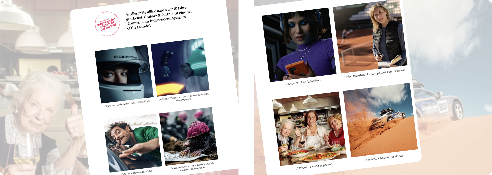
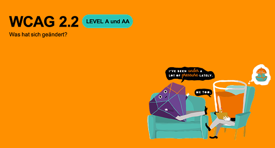
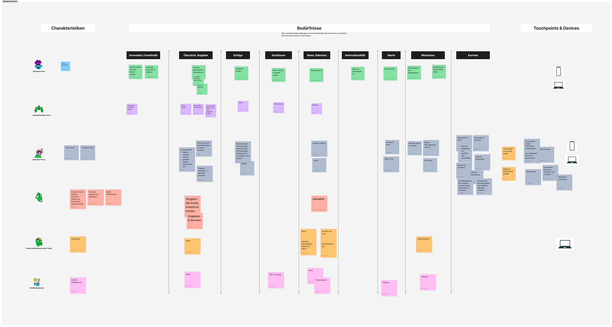
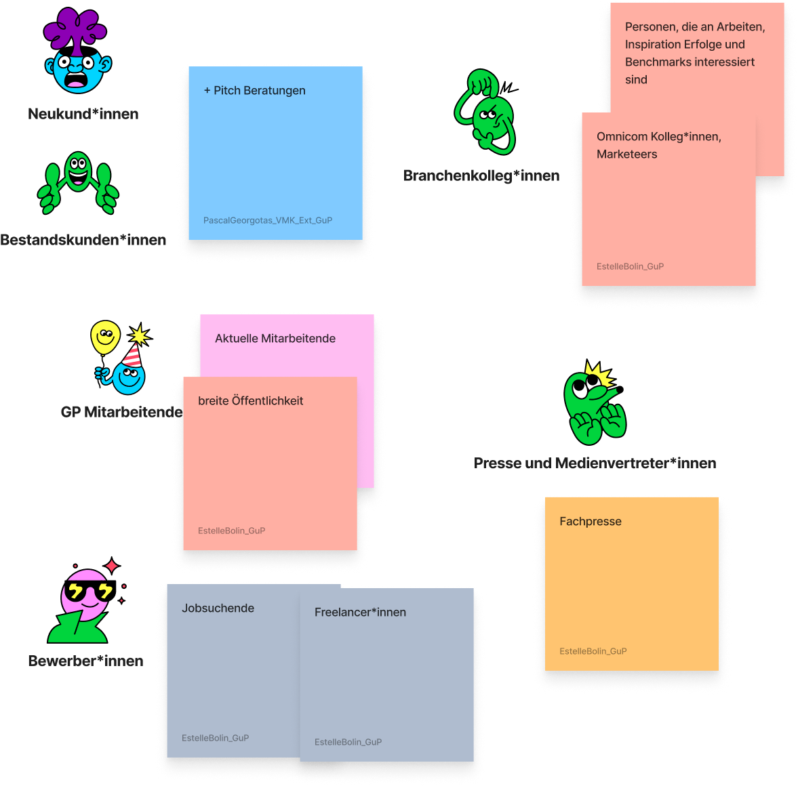
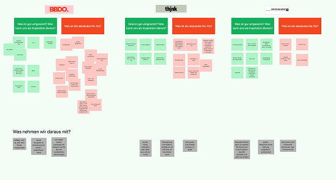
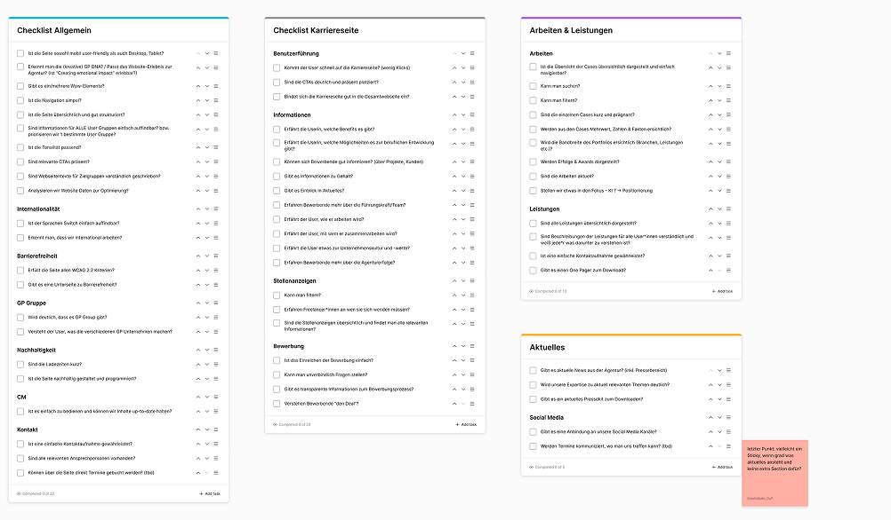
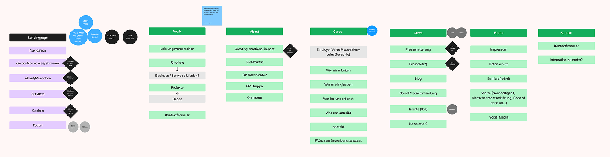

Strategy
Framing a website redesign as an opportunity to raise UX maturity, build internal alignment, and create lasting foundations — not just deliver a new interface.
strategy · ux research · accessibility · workshop facilitation
I led the strategic redesign of the agency website to create a clearer, more credible user experience while embedding UX principles and accessibility standards into the process.

Our agency website had become a barrier to growth. Poor accessibility, slow performance, unclear service communication, fragmented journeys, and a difficult CMS made it hard to keep the site useful and up to date. At the same time, a new corporate identity was about to be launched. The redesign aimed to turn the website into a clearer, more reliable touchpoint for potential clients, job candidates, and industry partners — while laying UX foundations for the organization.
The project had to solve for multiple constraints at once: limited budget, competing internal priorities, and a concurrent brand refresh that could affect every design decision. On top of that, the agency lacked a consistent UX practice — there was no shared research culture, accessibility standards were uneven, and user-centered decisions were not yet built into the process. What made this project especially important was its internal impact: it was our chance as UX team to prove that UX Design could bring clarity, structure, and measurable value, even with limited resources and under no ideal conditions.
I positioned the project as more than a website redesign — it became an opportunity to raise UX maturity across the organization. The focus was on research, alignment, and creating a decision-making structure that could outlast the launch itself.

What research revealed
The research made one thing clear: the website was not failing because of a single issue, but because multiple weaknesses reinforced each other. Users faced unclear service communication, fragmented journeys, and accessibility barriers, while the internal team struggled with a CMS that made updates slow and inconsistent.
Accessibility as priority
Accessibility quickly proved to be more than a compliance task. It became a practical lens for improving clarity, usability, and quality across the site — especially at a moment when the agency was about to introduce a new visual identity.
Alignment on shared vision
With multiple departments involved, alignment was just as important as design execution. I used workshops and structured feedback to create a shared direction, helping the team move from subjective opinions toward clearer, more user-centered decisions.
With limited resources and competing priorities, I focused on four research methods that gave us the clearest signal — fast.
The site audit revealed critical barriers that couldn't be treated as edge cases. I made the case internally that accessibility wasn't just a legal requirement ahead of the European Accessibility Act — it's a genuine differentiator that improves experience for everyone.

I ran a cross-departmental workshop to surface real tensions early: Sales wanted lead generation, Communications needed event visibility, HR needed a functional jobs section. Among other methods, we used Start-Stop-Continue-More-Less to structure feedback — combined with a short department-specific survey to understand what each team's users actually needed before any design decisions were made.

We identified 6 distinct user categories and mapped their journeys to find where needs overlapped — and where the site was losing them. One insight stood out: new clients and applicants often want the same thing — evidence of innovative thinking.

Most agency sites followed predictable patterns. Non-agency sites showed more interesting approaches to storytelling and engagement. With limited research time, competitor analysis became the fastest way to see what was possible — and what to avoid.

Finally, I created a new information architecture and a checklist for the website. The next phase was handed over to the creative department for the brand identity, while our UX team prepared the new design system in Figma.


After the workshop and survey, I consolidated all research, discussions, and departmental input into a single handover document — a structured checklist mapping what needed to be built, why, and who owned each action point.
Budget constraints paused full implementation — but the groundwork was laid.
Framing a website redesign as an opportunity to raise UX maturity, build internal alignment, and create lasting foundations — not just deliver a new interface.
Combining journey mapping, competitor analysis, stakeholder workshops, and accessibility audits to build a shared evidence base under real project constraints.
Conducting the agency's first-ever accessibility audit and using it as a lever to improve quality, credibility, and inclusion across the entire digital experience.